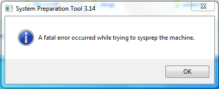

vim – Goodbye to :set paste
I’ve been using vim as my editor of choice ever since I started learning Linux, and something that has been bothering me for a while is how vim handles pasting.
I’ve been using vim as my editor of choice ever since I started learning Linux, and something that has been bothering me for a while is how vim handles pasting.
and the result:
It listens on all IPv4 interfaces, and binds to the port you specify, which in my case is 8080. The person on the other side will then be able to access the files in the directory from the outside by going to http://server1.example.com:8080, provided that your machine has the hostname server1.example.com, and that you have the port 8080 forwarded to the IP of server1.
I’m currently testing out Windows Deployment Services, and while working with sysprep on a Windows 7 Pro client machine, I got the following error:

Nothing seemed to work, till I tried the following recipe:
Open the run-menu, type in regedit and go to HKEY_LOCAL_MACHINE\SYSTEM\Setup\Status\SysprepStatus. Find GeneralizationState and set the value to 7.
Run a command prompt with administrative privileges. Type:
Open up regedit again and find HKEY_LOCAL_MACHINE\SOFTWARE\Microsoft\Windows NT\CurrentVersion\SoftwareProtectionPlatform. Find SkipRearm and set the value to 1.
Try running sysprep again now. Hopefully it should work. That’ll save you some time of frustration and hopefully you won’t go bald sooner.
Should this not work, check the sysprep-log file at C:\Windows\System32\Sysprep\Panther\setuperr.txt.
For a while now I’ve been trying to set up VMware to work with multiple monitors, in a Linux guest. With some windowmanagers it works out of the box without any issue, such as with Unity. I never figured out how to do it with xmonad, and recently I switched to i3 just to try something new. The damn “Cycle multiple monitors” button didn’t work here either. When I tried it, a message popped up saying:
The virtual machine must have up-to-date VMware Tools installed and running.
ncat is a utility that is like the UNIX cat command but for network connections. It’s based on the original netcat and comes with a couple of more modern features.
In this short post, we’ll go through a couple of examples to see exactly what uses this tool has. I’m currently using ncat version 7.01, in Ubuntu 16.04. ncat is a part of the nmap package in Ubuntu.
As an example, we have a file named primary_data_file.txt that contains 616 lines of data. We want to split this into 4 files, with the equal amount of lines in each.
The following command should do the trick:
split -da 1 -l $((`wc -l < primary_data_file.txt`/4)) primary_data_file.txt split_file --additional-suffix=".txt"
The option -da generates the suffixes of length 1, as well as using numeric suffixes instead of alphabetical.
The results after running the command are the following files:
With telnet:
With bash:
Replace tcp with udp, depending on what you want.
With netcat:
If the port is open, you will get an output of 0. If it’s closed, it’s a 1.
..without creating a temporary file:
The -y is just to show a side-by-side comparison. Very handy! And the result?
[jorge@j-laptop temp]$ diff -y <(ls First_directory) <(ls Second_directory)
common.txt common.txt
first_file.txt | second_file.txt
Thanks to my colleague Ingvar for showing me this!
I just reinstalled one of my machines with Fedora 21. The install went great, but when the machine was done rebooting, and I was trying to set up my access to a wireless network with nmcli (NetworkManager), I got the following error-message:
# nmcli dev
DEVICE TYPE STATE CONNECTION
enp0s25 ethernet unavailable --
lo loopback unmanaged --
wlo1 wifi unmanaged --
..and:
Spending a lot of time finding what the problem was, I finally found the solution. It seems that Wi-Fi support in NetworkManager has been separated to a plugin. The package NetworkManager-wifi was missing. According to Pablo S. Torralba, who was kind enough to comment on this post, it should be enough to kill NetworkManager and launch it again as root. Should that fail, you can always try the old reboot-trick! Either way, it should hopefully be working.
cron is a time-based job scheduler. This piece of software utility is used when you need to have a program run repeatedly at set time.
The daemon that runs in the background is named crond, while the file that contains the jobs themselves is named crontab.
You have three main directories:
Creating a crontab-file for your user is easy. Usage depends on what you need to do.
This command will allow you to edit the current user’s crontab. If a crontab doesn’t already exist, it will create a new one once you have saved your changes.
You can also edit another user’s crontab, but only if you have the correct permissions in place to do so.
or
..to list another user’s crontab.
These are the most common usages of the command crontab. For a couple of more options, see man crontab.
The syntax of a crontab-file looks like this:
Each asterisk represents a field. Starting from left to right, the fields are as follows:
On the fields Month and Day of the week, you can also use names instead of numeric values.
There are various operators that you can use with cron. Here’s the list:
An asterisk (*) is used to indicate that every instance (i.e. every hour, every weekday, etc.) of the particular time period will be used. So if you use an asterisk in the field Hour, it means that it will run every hour.
With this operator you can specify a list of values. If you use 1,5 in the field Day of week, this would mean Monday and Friday.
While comma specifies a list of values, dash specifies a range. 1-5 in the field Day of week would mean Monday to Friday.
Forward slash specifies a step value. If you’d like to execute a command every other hour, you could use 0-23/. You can also use steps after an asterisk, so if you want the command to run every two hours instead, use */2.
In this example the script backup.sh runs at 14:45, the first day of the month, every month.
This line runs the command list_files.sh at 04:30 on the 1st and 15th of each month, plus every Friday.
The line above runs the command wake_up.sh at 08:00, Monday to Friday.
..and this line would run the program annoy_wife.sh every five minutes, every day.
As always, if you want to know more about cron, check out the command man cron.
Have fun!